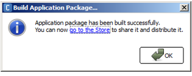

Application¶
What is an Application¶
An Application is a set of content that can be installed on a robot from the Apps 2.0 Store.
It contains all kind of useful resources such as Behaviors and Dialog topics.
Installing and managing Applications¶
Apps 2.0 Store is the main way to install and manage applications.
From Choregraphe, the Robot applications panel offers short-cuts letting you install and test on your robot the application designed in the current Project.
Creating an Application¶
To create an Application:
| Step | Action |
|---|---|
| Create a new Project. | |
| Create at least one Activity. | |
| Optionally, add one or several Dialog topic(s). | |
| Complete the Project Properties. | |
Save your Project. Result: Your Application is ready to be tested and packaged. |
Running an Application¶
To run the application designed in the current Project:
| Step | Action |
|---|---|
| Make sure you are connected to a robot. | |
In the Robot applications panel, click the
Result: The application is now installed on the connected robot. You can now run it using Robot applications panel. |
 Install Application button.
Install Application button.Building an Application Package¶
To build an Application Package:
| Step | Action |
|---|---|
| Choose File > Build Application Package... | |
Choose the Application Package destination path. 
|
|
Click the Save button. Once the build is done, a popup informs you and provides a shortcut to upload your Application Package on the Apps 2.0 Store.  |
Publishing an Application¶
To publish an Application Package:
| Step | Action |
|---|---|
| Click the link to the store and, follow contextual on line help provided by the Apps 2.0 Store. | |
| Before asking validation, check the Application - Best practices. |
Application - Best practices¶
Behavior design¶
- Check that your Application finishes: in all cases, there should be a path to the output of your Behavior.
Animation design: How to mix Timelines and Planar Moves¶
An animation should consist of one timeline Motion layer together with one Planar Move. Good method:

It is NOT recommended to use several timelines and planar moves for a single animation. The following behavior uses several timeline and planar move boxes, synchronized with timer boxes. It is a wrong design. Bad method:

The rationale behind this practice is that precise synchronization of timelines and planar moves is not guaranteed over multiple calls. The precise duration of each planar move depends on the robot environment, and is not perfectly predictable. The duration variations of several planar moves played in a row will add up, potentially resulting in a de-synchronization with the articular timeline.
Project Properties¶
Supported Languages¶
- Select the languages that are actually supported by the application and make sure that all the names and descriptions are translated in all the supported languages.
- For Dances and applications that do not use TTS: select Language Independent.
Application Description¶
- You will be able to modify and improve the Application Description on the Apps 2.0 Store: there you can use formatted text, hyperlinks etc.
NAOqi requirements¶
Specify the software versions for which you developed.
For example, to support all minor versions of 2.0 after the 2.0.1, specify:
“From 2.0.1 To 2.0”.
Robot requirements¶
- Make sure you specify all the robots for which you developed your application.
Behavior properties¶
Nature¶
- Check the Nature: usually this should be Interactive.
Trigger Sentences¶
- Check that the Trigger Sentences are relevant and not too general if you want to use this features
Release Note¶
- Completing the release note on the Apps 2.0 Store, specify on which robot version and on which software version you tested the application.